This topic provides information about configuring hierarchy components, which are also
called relationship hierarchy components. This topic is part of Configuring Data Visualization Components.
This topic contains the following information:
About Configuring Hierarchy Components
Mapping Business Components to the Business Object
Configuring and Mapping Business Component Fields
Configuring the Hierarchy Applet
Configuring the Tree Control
Mapping the Applet Web Template and Web Template Items
Configuring the Applet Tree and Tree Nodes
Configuring Drilldown Objects
Configuring Applet User Properties Related to Drilldown and Images
Configuring Multiple Hierarchy Applets
Mapping the Presentation Model and Physical Renderer
Mapping the Hierarchy Applet to a View Web Template
About Configuring Hierarchy Components
As noted in Hierarchy Components, a
hierarchy applet displays linked data in an ordered four-level hierarchy. Hierarchy data
is organized within a tree model framework and rendered using a custom tile model.
Conceptually, each level represents a position, such as the following. The example data
used throughout is from the hierarchy applet FINS Contact Hierarchy Applet, which is
part of the Siebel Financial Services dashboard.
Position 1 (level 1). In this example, this level represents a single
contact, such as Diana Abbott. The remaining levels represent aggregated data
associated with this contact.
Position 1.1 (level 2). This level represents a single household of the
parent contact. Multiple households (up to five) are displayed using tabs, with a
single tab currently selected.
Position 1.1.1 (level 3). This level represents multiple contacts of the
parent household. Each contact is shown in a tile below the parent household.
Position 1.1.1.1 (level 4). This level represents the opportunities of each
parent household contact. The opportunities are shown in a tile below the parent
household contact. The user can also access different level-4 data using an applet
toggle drop-down menu.
The hierarchy displayed below is based on the level-4 entity, opportunities. An applet
toggle is available at the top of the hierarchy applet, from which, in this example, the
user might be able to select other entities, such as activities, financial accounts, or
service requests. You can configure each selectable option in the applet toggle and what
it displays.
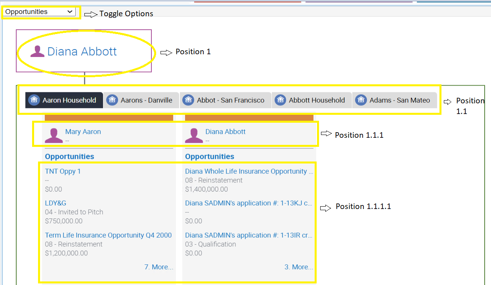
If no data is found representing position 1.1 (that is, households of parent contact in
this example), then the hierarchy applet can display alternate data, referred to as
position 1.2. For example, position 1.2 can be configured as opportunities of the parent
contact. In this example, if data from position 1.2 is displayed, then no tabs are
shown. The position 1.2 data (opportunities) displays in tiles, the same as in the
four-level case previously described, because Opportunities is selected in the applet
toggle drop-down menu.
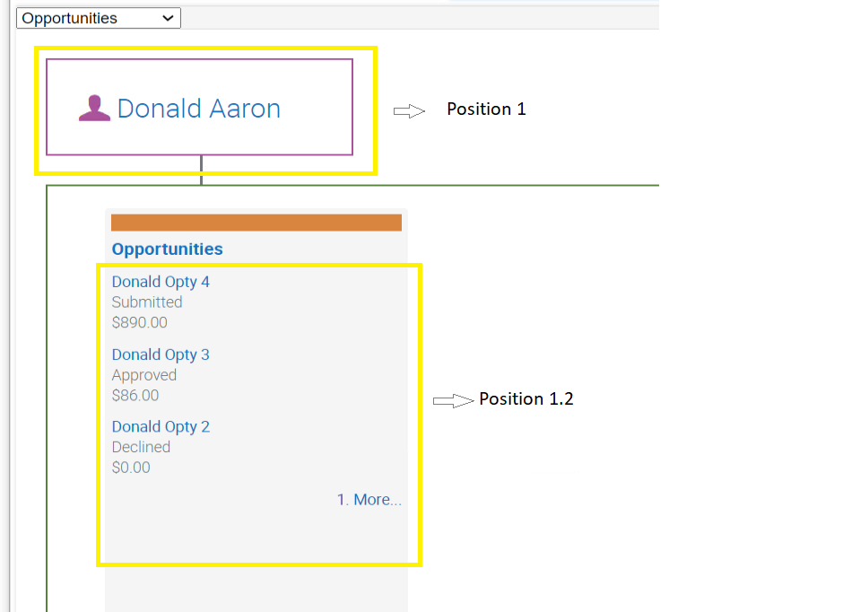
Mapping Business Components to the Business Object
The relationship hierarchy framework can be reused by any business scenario matching up
to four levels of hierarchy. To adapt this framework for a new business scenario, first
identify the business object and the four levels of business components for which to
show hierarchical data. The business components representing the four levels must belong
to a single business object and must have a hierarchical relationship within the
business object.
If you need to create the hierarchical relationship of the four levels of business
components, then you can use the following table as a general guide for this purpose.
Also examine the repository data used in this example, which is configured in the
business object Contact.
This table shows an example hierarchical relationship of four levels of business
components.
Business Component
Links (Source BC / Destination BC)
Description
<Position 1 BC>
Example:
FINS DB Hierarchy Root Contact
<Primary BC> / <Position 1 BC>
Example:
Contact/FINS DB Hierarchy Root Contact
Root contact "Diana Abbott"
< Position 1.1 BC>
Example:
FINS DB Hierarchy Household
<Position 1 BC> / <Position 1.1 BC>
Example:
FINS DB Hierarchy Root Contact/FINS DB Hierarchy Household
Relation between root contact and all its households.
< Position 1.1.1 BC>
Example:
FINS DB Hierarchy Contact
<Position 1.1 BC> / <Position 1.1.1 BC>
Example:
FINS DB Hierarchy Household/FINS DB Hierarchy Contact
Relation between a household and all its contacts.
<Entity 1 Position 1.1.1.1 BC>
Example:
FINS DB Hierarchy Opportunity 2
<Position 1.1.1 BC> / <Position 1.1.1.1 BC>
Example:
FINS DB Hierarchy Contact/FINS DB Hierarchy Opportunity 2
Relation between a household contact and its opportunities entity.
<Entity 1 Position 1.2 BC>
Example:
FINS DB Hierarchy Opportunity 1
<Position 1 BC> / <Position 1.2 BC>
Example:
FINS DB Hierarchy Root Contact/FINS DB Hierarchy Opportunity 1
Relation between root contact and its opportunities entity.
To support hierarchy applets in dashboards, the business component relationships
described in the table have been implemented for the Contact business object. These
repository updates included creating new business components and links.
According to your requirements for using hierarchy applets, you might choose to modify
or extend these configuration changes or configure new hierarchies. You might, for
example, want to reuse the existing hierarchical relationships defined for positions 1,
1.1, and 1.1.1 but, for positions 1.1.1.1 and 1.2, make configuration changes that
substitute opportunities with activities, financial accounts, or service requests. For
these entities, the following business components are configured and mapped in the
Contact business object to show entity details at positions 1.1.1.1 and 1.2.
In these tables, Entity 1 is Opportunity, Entity 2 is Activity, Entity 3 is Financial
Account, and Entity 4 is Service Request.
This table shows additional business components available for position 1.1.1.1 or
1.2.
Business Component
Links (Source BC / Destination BC)
Position
<Entity 2 Position 1.1.1.1 BC>
Example:
FINS DB Hierarchy Activity 1
FINS DB Hierarchy Contact/FINS DB Hierarchy Activity 1
1.1.1.1
<Entity 2 Position 1.2 BC>
Example:
FINS DB Hierarchy Activity 2
FINS DB Hierarchy Root Contact/FINS DB Hierarchy Activity 2
1.2
<Entity 3 Position 1.1.1.1 BC>
Example:
FINS DB Hierarchy FA 1
FINS DB Hierarchy Contact/FINS DB Hierarchy FA 1
1.1.1.1
<Entity 3 Position 1.2 BC>
Example:
FINS DB Hierarchy FA 2
FINS DB Hierarchy Root Contact/FINS DB Hierarchy FA 2
1.2
<Entity 4 Position 1.1.1.1 BC>
Example:
FINS DB Hierarchy SR 1
FINS DB Hierarchy Contact/FINS DB Hierarchy SR 1
1.1.1.1
<Entity 4 Position 1.2 BC>
Example:
FINS DB Hierarchy SR 2
FINS DB Hierarchy Root Contact/FINS DB Hierarchy SR 2
1.2
Configuring and Mapping Business Component Fields
As part of configuring hierarchy applets, you must also configure and map business
component fields. These business component fields are mapped in the tree node
configuration, which is part of the applet configuration. For some of the fields in the
current example, calculated fields were created, as shown below, allowing values from
multiple fields to be combined. Where more than one field value is required, you must
create a calculated field (concatenation of multiple fields separated by | symbols).
In the example in the following table, each position can be configured to display field
data in a way consistent with its location in the hierarchy:
Positions 1 and 1.1 each support the display of a single field value (single
attribute).
Position 1.1.1 uses a calculated field value to obtain and display two field
values (two attributes).
Positions 1.1.1.1 and 1.2 each use a calculated field to obtain and display four
field values (four attributes).
This table shows an example hierarchical relationship of four levels of business
components.
Position
Business Component
Field
Number of Attributes Shown
Description
Position 1
FINS DB Hierarchy Root Contact
Full Name
1
The field Full Name is mapped in the applet tree control Node Position 1
to render the Contact FullName value.
Position 1.1
FINS DB Hierarchy Household
Household Name
1
The field Household Name is mapped in the applet tree control Node
Position 1.1 to render the Household value.
You can reuse existing fields or create new calculated fields, depending on your use
case.
Configuring the Hierarchy Applet
This step shows you how to create and configure a new hierarchy applet. You must create
a new workspace and create a new applet with the following properties. The example data
in this topic is for the FINS Contact Hierarchy Applet.
This table lists the properties you configure for the applet FINS Contact
Hierarchy Applet.
Property Name
Value
Comment
Name
<AppletName>
The name of the applet. In this example, the applet name is FINS Contact
Hierarchy Applet.
Class
CSSSWETreeRelHier
The name of a C++ class used to manage the applet. This is the hierarchy
applet framework class. The framework constructs the CSS class based on
the business component mapped to the applet.
Type
Standard
By default, the type is Standard.
Business Component
<BusComp>
The name of the primary business component for this hierarchy applet. The
business component must be defined in the business object specified for
any view that uses this applet.
Applet Title
<AppletTitle>
The applet title is autopopulated based on the value of the property
Title - String reference.
Configuring the Tree Control
For the hierarchy applet (FINS Contact Hierarchy Applet in this example), create a Tree
control, as follows.
This table lists the properties you configure for the Tree control.
Property
Value
Comment
Name
Tree
The name of the control.
HTML Type
Text
The HTML type for the control you create. This must be Text.
Caption - String Reference
Tree
The caption property is populated based on this mapping. In this
example, the caption is Tree.
Mapping the Applet Web Template and Web Template Items
For this applet (FINS Contact Hierarchy Applet in this example), create a new applet web
template, as follows.
This table lists the properties you configure for the applet web template.
Property
Value
Comment
Name
Base
The name of the applet web template.
Type
Base
The type of applet web template. In this case, the Type must be Base.
Web Template
Relationship Hierarchy Applet
The type of web template for this applet web template. It must be
Relationship Hierarchy Applet.
Create an applet web template item for this applet web template, as follows.
This table lists the applet web template item for this example.
Name
Control
Item Identifier
Tree
Tree
99,994
Configuring the Applet Tree and Tree Nodes
For this applet (FINS Contact Hierarchy Applet in this example), navigate to the Tree
object and create a new record with the following properties.
This table lists the applet tree for this example.
Name
HTML Hierarchy Bitmap
Tree
Global Account Bitmaps
Then navigate to the Tree Node object and create a new record with the following
properties. This configuration differs in each entity at only positions 1.1.1.1 and
1.2.
This table shows the configuration for the applet tree nodes for this example.
Name
Business Component
Display Name
Label Field
Max Child Items
Position
<Position 1>
<Position 1 BC>
<Title of Position 1>
<Position 1 BC Field>
1
<Position 1.1>
<Position 1.1 BC>
<Title of Position 1.1>
<Position 1.1 BC Field>
1.1
<Position 1.1.1>
<Position 1.1.1 BC>
<Title of Position 1.1.1>
<Position 1.1.1 BC Field>
1.1.1
<Position 1.1.1.1>
<Position 1 1.1.1.1 BC>
<Title of Position 1.1.1.1>
<Position 1.1.1.1 BC Field>
3
1.1.1.1
<Position 1.2>
<Position 1.2 BC>
<Title of Position 1.2>
<Position 1.2 BC Field>
3
1.2
Note: The Max Child Items property is set to 3 for the tree nodes for positions 1.1.1.1 and
1.2, meaning that up to three records can be displayed for those positions. If there are
more than three records, then the hierarchy applet framework supports configuring a More
link that allows the user to display additional records, as described later in this
topic.
The following is an example of tree node configuration for a hierarchy applet.
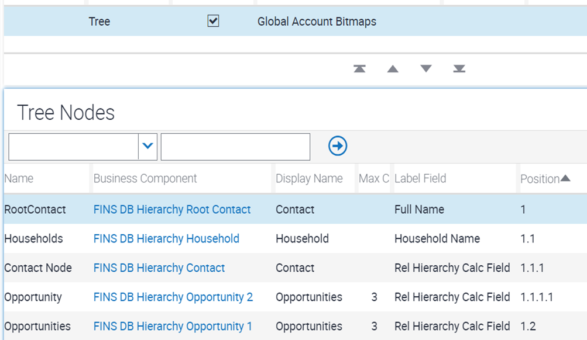
Configuring Drilldown Objects
To support drilldown functions for different levels in the hierarchy, you must configure
drilldown objects. For this applet (FINS Contact Hierarchy Applet in this example),
navigate to Drilldown Objects. Then create and configure five drilldown objects for
different positions, as follows. Drilldown is supported at positions 1, 1.1.1, 1.1.1.1,
and 1.2 and on More link. This configuration differs in each entity at only positions
1.1.1.1 and 1.2.
Note: The Source Field in the following table is mapped to an unbounded picklist. This
picklist lists all fields of the business component that are mapped at the Applet level.
However, for the hierarchy to map the fields of the relevant position business
component, instead of using the drop-down directly, update the property with the
respective field.
This table shows the configuration for the drilldown objects for this example.
Name
View
Source Field
Business Component
Destination Field
<Drilldown Name>
<Destination View>
<Field from node level BC>
<Destination BC>
<Field from Destination BC>
The following is an example of the drilldown objects for a hierarchy applet.
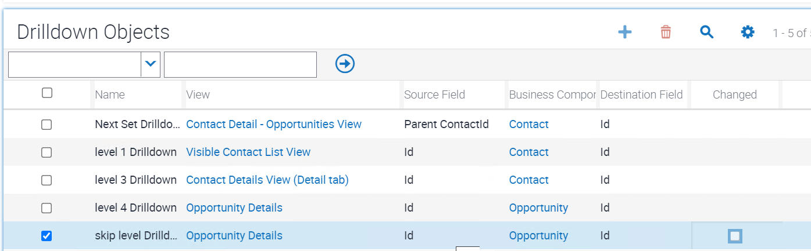
Configuring Applet User Properties Related to Drilldown and Images
In addition to creating the drilldown objects for the hierarchy applet, you must enable
the drilldown for each applicable tree node position. To do this, first create an applet
user property called Enable Tree DrillDown. Then create applet user properties for the
tree node position and "Root" or "NextSet", as shown in the following table. Set the
value to the name of the corresponding drilldown object, which you previously
configured.
Then, for the new applet, navigate to Applet User Properties. Create new records with
the following properties. For each property, set the value to the name of the
corresponding drilldown object.
This table lists the applet user properties to support drilldown.
Name
Value
1.Root
<Position 1 drilldown name>
1.1.1.Root
<Position 1.1.1 drilldown name>
1.1.1.1.Root
<Position 1.1.1.1 drilldown name>
1.1.1.1.NextSet
<Position 1.1.1.1 More link drilldown name>
1.2.Root
<Position 1.2 drilldown name>
1.2.NextSet
<Position 1.2 More link drilldown name>
The following is an example of the drilldown objects and applet user properties to
support drilldown for a hierarchy applet.
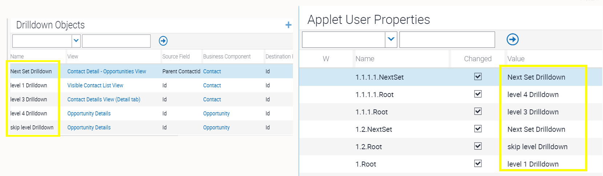
Next, configure applet user properties to map images at positions 1, 1.1, and 1.1.1.
This table lists the applet user properties to support images.
Name
Value
Comments
ClientPMUserProp
level1, level2
This is a generic framework user property to send data to the client.
This property is processed at the client side to get the level1 icon
value to map in the user interface at positions 1 and 1.1.1 and to get
the level2 icon value to map at position 1.1.
The property name and value cannot be changed for hierarchy applets.
level1
<Icon Class>
This property is used by the hierarchy applet client code to fetch the
icon value for positions 1 and 1.1.1. The property name cannot be
changed. In this example, the property specifies the value
siebui-icon-contacts.
level2
<Icon Class>
This property is used by the hierarchy applet client code to fetch the
icon value for position 1.1. The property name cannot be changed. In this
example, the property specifies the value siebui-icon-households_icon.
The following is an example of the applet user properties to support images for a
hierarchy applet.
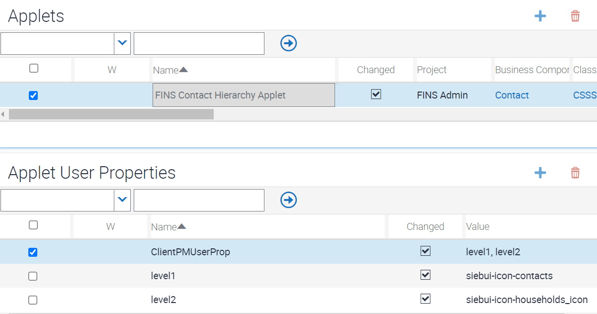
Configuring Multiple Hierarchy Applets
If you need to create a new hierarchy applet for a new entity to serve as a toggle
applet for displaying level-4 data, then perform the following four steps:
Copy an existing hierarchy applet. Make a copy of an existing configured
hierarchy applet and then modify the copy for the new entity. By doing this, you
save configuration steps compared to creating a new hierarchy applet from the
beginning.
Modify the tree node configuration for the copied hierarchy applet. For the
newly copied hierarchy applet, change property values for tree nodes for position
1.1.1.1 and position 1.2, as listed below, to support the new entity.
This table lists the tree node properties to modify for creating an
additional hierarchy applet.
Name
Business Component
Display Name
Label Field
Position
<Entity Name for Position 1.1.1.1>
<New Entity BC for Position 1.1.1.1>
<Entity Display Name for Position 1.1.1.1>
<Field from New Entity BC>
1.1.1.1
<Entity Name for Position 1.2>
<New Entity BC for Position 1.2>
<Entity Display Name for Position 1.2>
<Field from New Entity BC>
1.2
The following are examples of modifying tree node properties for creating
additional hierarchy applets for Activities, Financial Accounts, and Service
Requests.
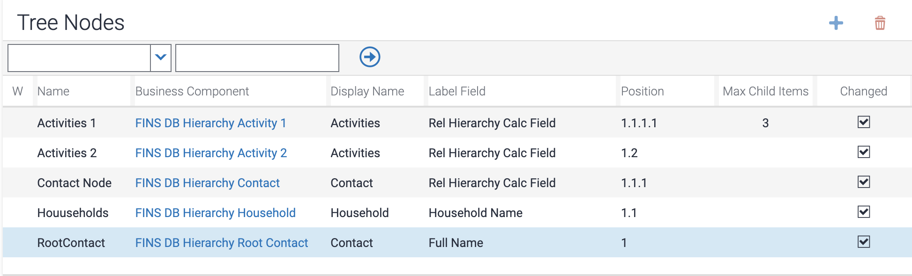
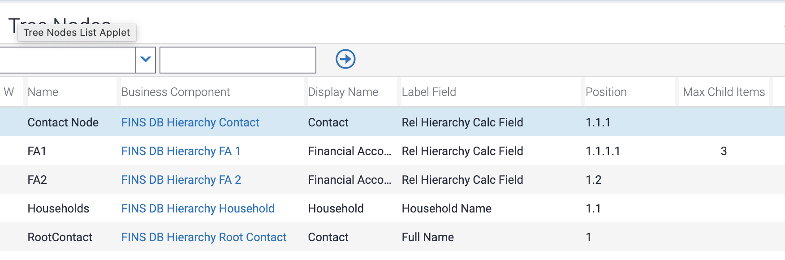
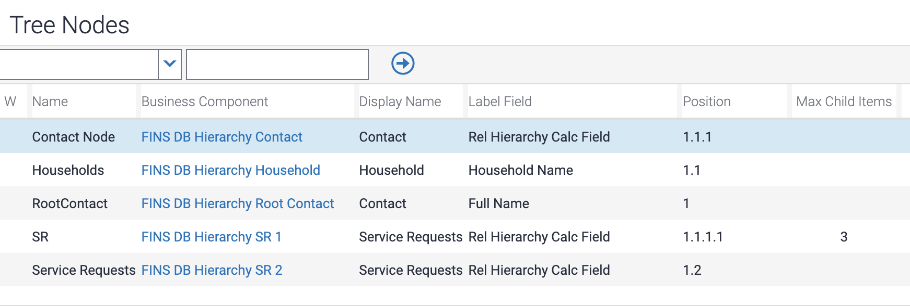
Modify the drilldown object configuration for the copied hierarchy applet.
For the newly copied hierarchy applet, change property values for the following
drilldown objects. Modify View, Source Field, Business Component, and Destination
Field as needed to support the new entity.
This table lists the drilldown object properties to modify for creating an
additional hierarchy applet.
Name
View
Source Field
Business Component
Destination Field
Next Set Drilldown
<View Name>
<Source Field>
<Destination BC>
<Destination Field>
level 4 Drilldown
<View Name>
<Source Field>
<Destination BC>
<Destination Field>
skip Level Drilldown
<View Name>
<Source Field>
<Destination BC>
<Destination Field>
The following are examples of modifying drilldown object properties for creating
additional hierarchy applets for Activities, Financial Accounts, and Service
Requests.
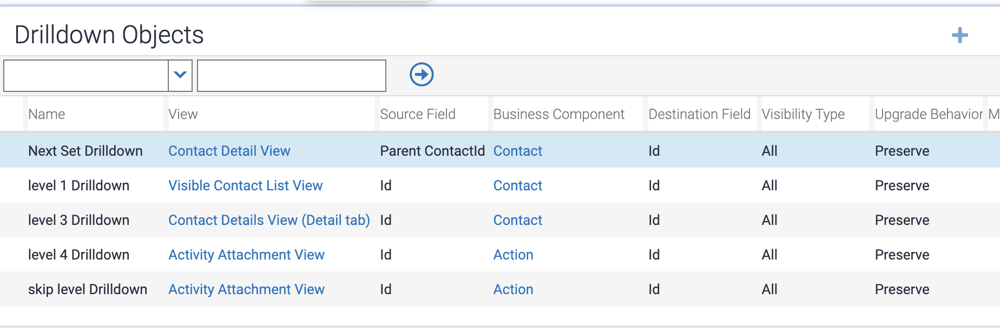
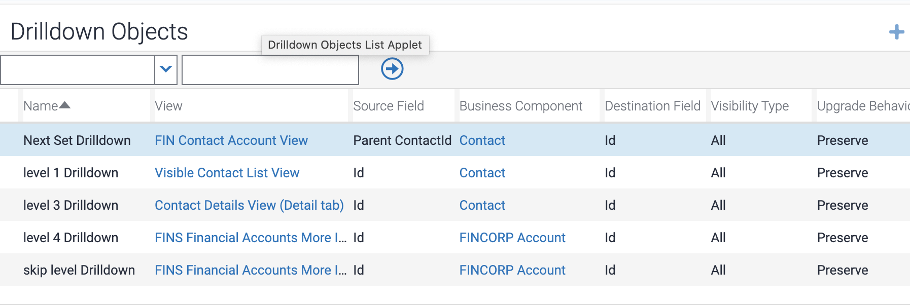
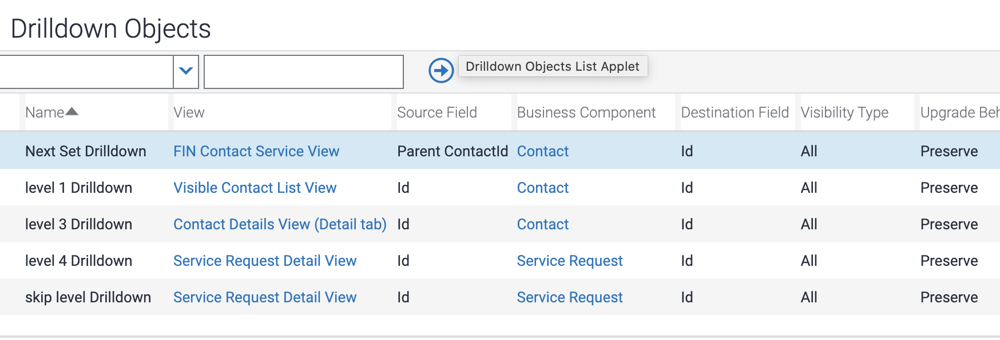
Map applet toggles. For the main hierarchy applet (FINS Contact Hierarchy
Applet in this example), you must configure the applet toggles that provide
additional choices for level-4 data to display in the hierarchy applet. As
described earlier, the default configured level-4 entity for this example is
Opportunities, but alternative data such as Activities, Financial Accounts, or
Service Requests can also be displayed at position 1.1.1.1 or position 1.2 in the
hierarchy applet. Business components and links already configured for this
purpose are listed in the information about mapping business components.
Displaying these entities requires creating applet toggle records for the main
hierarchy applet.
For the main hierarchy applet (FINS Contact Hierarchy Applet in this example),
navigate to Applet Toggles. Then create new records that specify each required
applet toggle for each required entity. Also specify the Auto Toggle Value to
indicate the entity name that is selectable in the applet toggle drop-down menu at
the top of the hierarchy applet. The following table identifies some of this
information to help you add applet toggles for FINS Contact Hierarchy Applet.
Substitute entries for your use case as needed.
This table shows values for configuring new applet toggles for FINS Contact
Hierarchy Applet.
Entity
Applet
Auto Toggle Value
Activities
FINS Contact Hierarchy Activity Applet
Activities
Financial Accounts
FINS Contact Hierarchy FA Applet
Financial Accounts
Service Requests
FINS Contact Hierarchy SR Applet
Service Requests
The following is an example of the applet toggle records required to support
Activities, Financial Accounts, or Service Requests in the applet toggle drop-down
menu, for FINS Contact Hierarchy Applet.
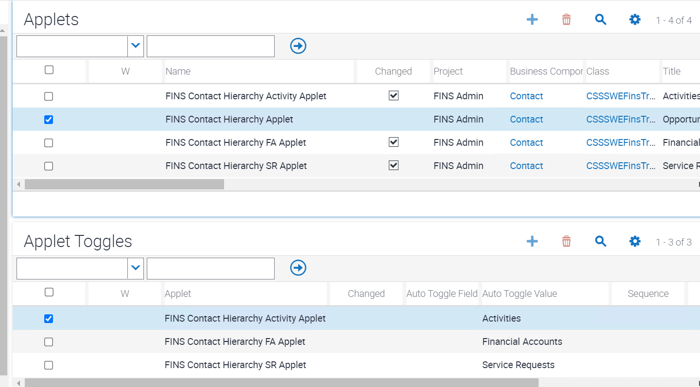
Mapping the Presentation Model and Physical Renderer
You must register the new hierarchy applet (such as FINS Contact Hierarchy Applet in
this example) and all related toggle hierarchy applets with presentation model and
physical renderer settings. In these tasks, the Files records you create specify the
files siebel/relationshiphierpm.js (for presentation model) and
siebel/relationshiphierpr.js (for physical renderer). These tasks are needed for
automation support and for supporting a custom CSS style class. Note the following:
The client presentation model file relationshiphierpm.js retrieves data in a
property set named "root" and is mapped to the client-side controls.
The client physical renderer file relationshiphierpr.js renders data in tile
format.
Also map the presentation model relationshiphierviewpm.js to the view displaying the
hierarchy applet. Doing this is necessary to maintain the context of the selected
position 1.1 tab when the user toggles between different toggle applets.
To map the presentation model to the hierarchy applet
Navigate to Administration - Application screen and then to the Manifest
Administration view.
You must register the new applet (such as FINS Contact Hierarchy Applet) with new
presentation model settings.
In the UI Objects list, create a new record with values like the following:
This table shows the UI Objects record you must create.
Type
Usage Type
Name
Applet
Presentation Model
<AppletName>
In the Object Expression list, create a new record with the following value:
This table shows the Object Expression record you must create.
Level
1
In the Files list, create a new record with the following values:
This table shows the Files record you must create.
Level
Name
1
siebel/relationshiphierpm.js
To map the physical renderer to the hierarchy applet
Navigate to Administration - Application screen and then to the Manifest
Administration view.
You must register the new applet (such as FINS Contact Hierarchy Applet) with new
physical renderer settings.
In the UI Objects list, create a new record with values like the following:
This table shows the UI Objects record you must create.
Type
Usage Type
Name
Applet
Physical Renderer
<AppletName>
In the Object Expression list, create a new record with the following value:
This table shows the Object Expression record you must create.
Level
1
In the Files list, create a new record with the following values:
This table shows the Files record you must create.
Level
Name
1
siebel/relationshiphierpr.js
To map the presentation model to the view
Navigate to Administration - Application screen and then to the Manifest
Administration view.
You must register the view displaying the hierarchy applet with new presentation
model settings.
In the UI Objects list, create a new record with values like the following:
This table shows the UI Objects record you must create.
Type
Usage Type
Name
View
Presentation Model
<ViewName>
In the Object Expression list, create a new record with the following value:
This table shows the Object Expression record you must create.
Level
1
In the Files list, create a new record with the following values:
This table shows the Files record you must create.
Level
Name
1
siebel/relationshiphierviewpm.js
Mapping the Hierarchy Applet to a View Web Template
You must also map the main hierarchy applet (FINS Contact Hierarchy Applet in this
example) to the view that is to display the hierarchy applet. Typically, this is the
view representing a particular dashboard into which you are mapping multiple applets for
different data visualization components.
The view web template for the view FINS Contact Dashboard View (for the Siebel Financial
Services dashboard), for example, has a placeholder for the hierarchy applet. Review the
highlighted content shown below for the view web template Fins Dashboard View, beginning
with div class="siebui-hierarchy-container ...".
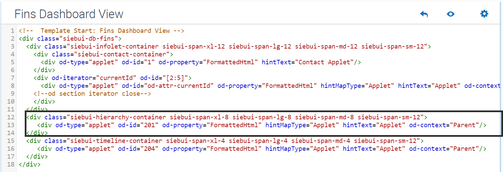
Only the main hierarchy applet (FINS Contact Hierarchy Applet in this example) must be
mapped in the view. In any new view to display a hierarchy applet, this hierarchy applet
must be mapped to the view. You must also add the necessary classes to the view web
template to achieve the required height and width. You can customize or override the
styling on the existing CSS classes of the hierarchy applet. The view web template item
must specify the applet mode Base for a hierarchy applet that you map. For example,
create a view web template item as follows.
This table shows the view web template item for this example.
Name
Applet
Applet Mode
Item Identifier
<Applet Name>
<Hierarchy Applet Name>
Base
<Item Identifier for Hierarchy>
The following is a sample configuration of the view web template and view web template
items, for this example.